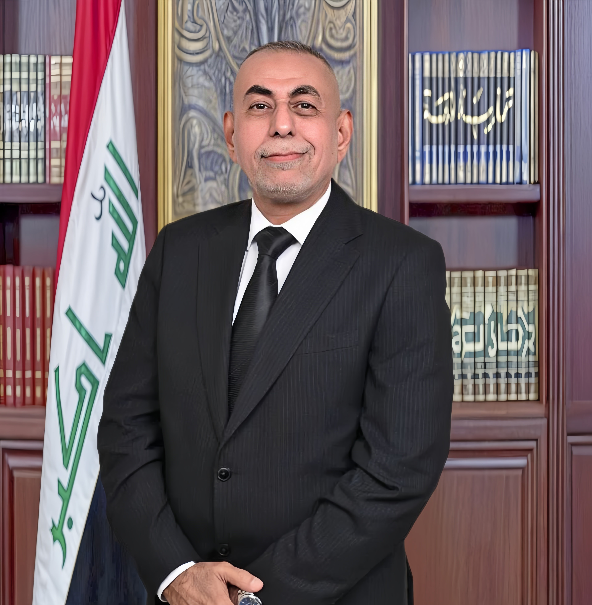

الشيخ الصناعي
رائد عباس يوسف الخزرجي ( أبو ضحى )


الاسم: الشيخ الصناعي رائد عباس يوسف الخزرجي (أبو ضحىٰ)
التولد: بغداد - 1965
خريج الجامعة التكنولوجية
دبلوم ميكانيك / قسم تصنيع المعادن بغداد 1987-1986
المؤهلات
- نلت المرتبة الرابعة في التسلسل على دفعتي الدراسية ومن خلالها تم انتخابي للعمل في أهم الدوائر المتخصصة بالبحوث العلمية والتقنية آن ذاك.
- عضو اتحاد الصناعات العراقية 2008.
- عضو مجموعة الصناعيين العراقيين.
- صاحب معامل تصنيع المنتجات البلاستيكية داخل العراق وخارجه.
- حاصل على شهادة براءة اختراع (الملكية الصناعية) من الجهاز المركزي للتقييس والسيطرة النوعية سنة 2020.
- من خلال انتسابي في غرفة تجارة بغداد سنة 2010 شاركت بتجهيز شركات وزارة الصناعة والمعادن بمواد التعبئة والتغليف وبالمواصفات العالمية المعتمدة (ISO) ومن أهمها:
- الشركة العامة لصناعة الزيوت النباتية
- الشركة العامة لصناعة الأدوية والمستلزمات الطبية / سامراء
- مصانع لبن أبو غريب
- شاركت بتوفير المنتجات والسلع اللدائنية المختلفة ورفد الأسواق المحلية أثناء الحصار الاقتصادي على بلدنا، مما أثر وبشكل إيجابي على الواقع الصناعي للبلد إلى يومنا هذا.
النشاط المدني / الإنساني
- أحد شيوخ ووجهاء قبيلة خزرج والمكنى (أبو ضحى الخزرجي) حيث توسمت بتمثيل عمامي منذ عام 1994، وبفضل الله لنا تاريخ طويل في حل الخلافات بين الناس واحقاق الحق ونصرة المظلوم.
- من المؤسسين والركائز المهمة لموكب أنصار الرسول (ص) عزاء الكاظمية المقدسة وما له من الأثر الفاعل في استقطاب الشباب وحثهم للحفاظ على الدين الإسلامي والقيم المجتمعية من خلال المحاضرات الإسلامية وأيضا التكاتف وخدمة زوار الإمام الحسين (ع) في جميع العتبات المقدسة ولكافة المناسبات.
- تشرفت بالمشاركة الفعالة والرئيسية في بناء وتوسيع جامع وحسينية الإمام المنتظر (عج) بمدينة الحرية الكريمة عام 1998، وما له من أثر في تثبيت العقائد الدينية والإسلامية والترابط المجتمعي آنذاك وإلى يومنا هذا.
- التصدي للباطل بالأمر بالمعروف والنهي عن المنكر والحفاظ على ممتلكات المواطنين بعد سقوط النظام السابق.
- كان لي الفخر بمد يد العون للكثير من العوائل المتعففة ومساعدتهم لعبور محن الحياة وقساوتها من خلال حقوقنا الشرعية.
- ساهمنا ومن فضل الله في إنقاذ أرواح المواطنين في جائحة كورونا 2020-2023 وذلك بتصنيع وتوزيع الأجهزة والمستلزمات الطبية وأهمها أجهزة إعطاء الأوكسجين والكمامات محلية الصنع.
- ومن واجبنا تجاه الوطن والشعب العراقي استطعنا تزويد القوات الباسلة التي دافعت عن أرضنا في حربها ضد داعش الإرهابي بعد فتوى الجهاد الكفائي بالدعم اللوجيستي سنة 2014-2017 ولنا شهادات تقديرية بذلك.